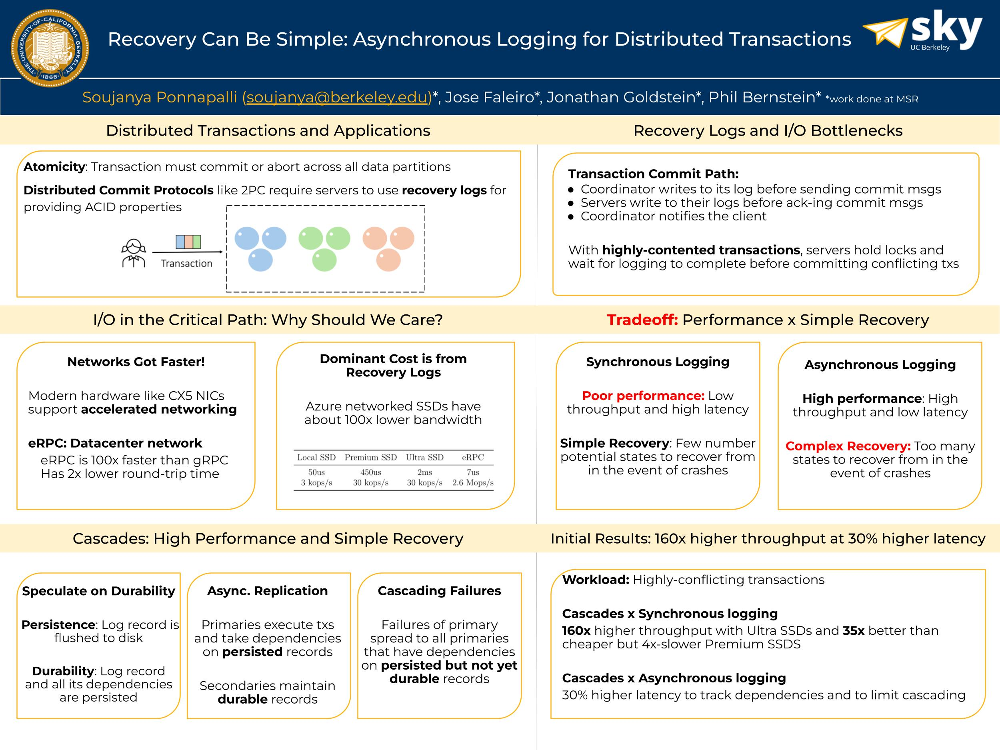

<h2>Recovery can be Simple! Asynchronous Logging for Distributed Transactions</h2> 
<p>
Sky Retreat, Fall 2024 <br>
</p>
<a href="https://people.eecs.berkeley.edu/~soujanya/posters/cascades.jpg"></a>


<h2>mLSM: Making Authenticated Storage Faster in Ethereum</h2> 
<p>
HotStorage 2018<br>
</p>
<a href="https://people.eecs.berkeley.edu/~soujanya/posters/mlsm.jpg"></a>


<h2>CrashML: Making Systematic Crash Testing of File Systems Feasible</h2> 
<p>
OSDI 2018 <br>
</p>
<a href="https://people.eecs.berkeley.edu/~soujanya/posters/crashml_osdi.jpg"></a> 
